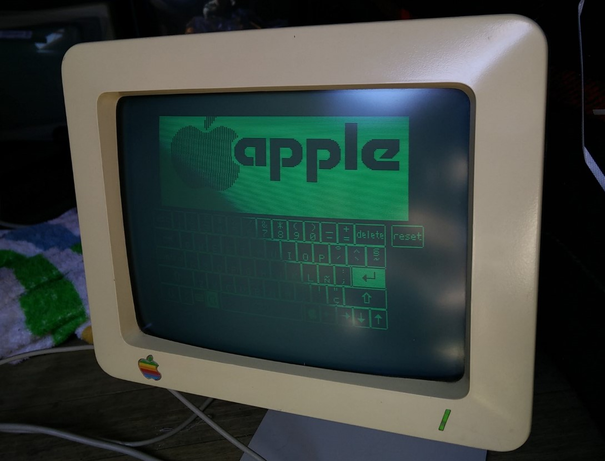

Línea de Tiempo
Selecciona una opción en el menú lateral para ver los detalles.
Apple
| Nombre | Version (SO) | Version Kernel | Año Lanzamiento | Procesador | Velocidad | Arquetectura | Número Hilos | Tipo | Capacidad | Frecuencia (Velocidad) | Novedades Hadware | Novedades Software | Pantallazo Escritorio |
|---|---|---|---|---|---|---|---|---|---|---|---|---|---|
| Apple I | No tenía un sistema operativo como los conocemos hoy; usaba una interfaz de línea de comandos básica. | N/A | 1976 | MOS Technology 6502 | 1 MHz | 8 bits | 1 | DRAM | 4 KB (expandible a 8 KB o 48 KB con tarjetas de expansión) | 1 MHz | Incluía solo la placa base sin carcasa, teclado o monitor; los usuarios tenían que añadir estos componentes. | Venía con un intérprete de BASIC en cinta. | No contaba con interfaz |
| Apple II | No tenía un sistema operativo como los conocemos hoy; inicialmente se usaba el monitor ROM y luego se desarrollaron varios sistemas operativos, incluidos Apple DOS y ProDOS | N/A | 1977 | MOS Technology 6502 | 1 MHz | 8 bits | 1 | DRAM | 4 KB (expandible a 8 KB o 48 KB con tarjetas de expansión) | 1 MHz | "Primera computadora personal en color. Expansión de ranuras (7 ranuras de expansión). Carcasa de plástico integrada con teclado." | "Soporte para gráficos a color y sonido. Soporte para BASIC (lenguaje de programación). Primeros programas de hoja de cálculo (VisiCalc) y juegos (e.g., ""Oregon Trail"")." | |
| Apple II Plus | No tenía un sistema operativo formal, pero se utilizaba AppleSoft BASIC. | N/A | 1979 | MOS 6502 | 1 MHz | 8 bits | 1 | DRAM | 16 KB (expandible a 64 KB) | No especificada | Mejora en la capacidad de RAM y soporte para discos de 5.25 pulgadas. | Incluía AppleSoft BASIC, que permitía el uso de gráficos en color y sonido. | |
| Apple III | Apple SOS (Sophisticated Operating System) | N/A | 1980 | Apple SOS (Sophisticated Operating System) | 2 MHz | 8 bits | 1 | DRAM | 128 KB (expandible a 512 KB) | 2 MHz | "Carcasa de metal para disipación de calor. Teclado incorporado y teclado numérico. Unidad de disquete integrada de 5,25 pulgadas. Soporte para texto en 80 columnas. Soporte para gráficos de alta resolución (560x192 píxeles)." | "Apple SOS, un sistema operativo avanzado para su tiempo con características como manejo de archivos jerárquico. Compatibilidad limitada con software del Apple II. Aplicaciones empresariales como hojas de cálculo y bases de datos." | |
| Apple IIe | No tenía un sistema operativo formal, pero se utilizaba AppleSoft BASIC. | N/A | 1983 | MOS 6502 | 1 MHz | 8 bits | 1 | DRAM | 64 KB (expandible a 128 KB) | No especificada | Mejora en la capacidad de RAM y expansión de los puertos, diseño más robusto. | Mejoras en la compatibilidad de software y hardware. | |
| Apple Lisa | Lisa OS | N/A | 1983 | Motorola 68000 | 5 MHz | 16 bits | 1 | DRAM | 1 MB | No especificada | Primer computador personal con interfaz gráfica de usuario (GUI) y ratón. | Introducción de la interfaz gráfica de usuario con ventanas y iconos, Lisa Office System. |  |
| Apple IIc | No tenía un sistema operativo formal, pero se utilizaba AppleSoft BASIC. | N/A | 1984 | MOS 6502 | 1 MHz | 8 bits | 1 | DRAM | 128 KB | No especificada | Diseño más compacto y portátil en comparación con el Apple IIe, con una unidad de disco interna. | Compatibilidad con el software de Apple II y nuevas características de portabilidad. |  |
| Apple Macintosh 128K | System Software 1.0 | N/A | 1984 | Motorola 68000 | 8 MHz | 16 bits | 1 | DRAM | 128 KB | No especificada | Introducción de la interfaz gráfica de usuario con ratón, diseño compacto todo-en-uno. | Primer Macintosh con System Software, aplicaciones gráficas e interfaz intuitiva. |  |
| Apple IIgs | ProDOS 8 (Apple IIgs), GS/OS | N/A | 1986 | WDC 65C816 | 2.8 MHz | 16 bits | 1 | DRAM | 256 KB (expandible a 8 MB) | No especificada | Mejoras en el rendimiento con un procesador de 16-bit, gráficos mejorados y sonido | Introducción de GS/OS, un sistema operativo con una interfaz gráfica mejorada para la línea Apple II. | |
| Macintosh SE | System Software 6.0.8 | N/A | 1987 | Motorola 68000 | 8 MHz | 16 bits | 1 | DRAM | 1 MB (expandible a 4 MB) | No especificada | Diseño compacto y modular, introducción de una segunda bahía para discos duros internos. | Mejora del System Software, introducción de nuevas utilidades y capacidades de hardware. | |
| Apple Macintosh Plus | System Software 4.0.1 | N/A | 1986 | Motorola 68000 | 8 MHz | 16 bits | 1 | DRAM | 1 MB (expandible a 4 MB) | No especificada | Mayor capacidad de RAM y disco duro interno de 3.5 pulgadas. | Introducción de mejoras en el sistema operativo y el soporte para nuevas aplicaciones. | |
| Macintosh II | System Software 4.0 | N/A | 1987 | Motorola 68020 | 16 MHz | 32 bits | 1 | DRAM | 8 MB (expandible a 32 MB) | No especificada | Procesador más rápido, mejor rendimiento gráfico y de cálculo, diseño avanzado para su época. | Mejoras en la gestión de memoria y rendimiento del sistema operativo | |
| Apple Macintosh Portable | System Software 6.0.5 | N/A | 1989 | Motorola 68000 | 16 MHz | 16 bits | 1 | DRAM | 1 MB (expandible a 32 MB) | No especificada | Primera computadora portátil de Apple con una pantalla LCD, diseño robusto para portabilidad. | Compatible con System Software de Macintosh, mejoras en software de administración de energía. |  |
| Apple Macintosh LC | System Software 7.0 | N/A | 1990 | Motorola 68030 | 16 MHz | 32 bits | 1 | DRAM | 2 MB (expandible a 32 MB) | No especificada | Sistema compacto y asequible con capacidad de expansión y opciones de actualización. | Mejora en la interfaz de usuario y soporte para aplicaciones nuevas. | |
| Apple Macintosh IIfx | System Software 6.0.7 | N/A | 1990 | Motorola 68030 | 40 MHz | 32 bits | 1 | DRAM | 8 MB (expandible a 32 MB) | No especificada | Procesador más rápido, mejor rendimiento gráfico y de cálculo, diseño avanzado para su época. | Mejoras en la gestión de memoria y rendimiento del sistema operativo. | |
| Apple Macintosh Quadra 700 | System Software 7.0.1 | N/A | 1991 | Motorola 68040 | 25 MHz | 32 bits | 1 | DRAM | 8 MB (expandible a 68 MB) | No especificada | Avanzado rendimiento gráfico y de procesamiento, diseño modular con expansión de memoria. | Introducción de System Software 7.0, que trajo mejoras significativas en la interfaz gráfica y el soporte para redes. | |
| Macintosh Color Classic | System Software 7.1 | N/A | 1993 | Motorola 68030 | 16 MHz | 32 bits | 1 | DRAM | 4 MB (expandible a 10 MB) | No especificada | Pantalla a color, diseño compacto y atractivo para el hogar. | Mejora en el soporte para gráficos y multimedia. |  |
| Apple Macintosh PowerBook 500 Series | Mac OS 7.5 | N/A | 1994 | PowerPC 603e | 100 MHz | 32 bits | 1 | DRAM | 8 MB (expandible a 64 MB) | No especificada | Diseño portátil, pantalla LCD de 10.4 pulgadas, batería recargable. | Soporte para Mac OS 7.5, mejoras en la administración de energía. | |
| Apple Power Macintosh 6100 | Mac OS 7.5 | N/A | 1994 | PowerPC 603 | 60 MHz | 32 bits | 1 | DRAM | 8 MB (expandible a 64 MB) | No especificada | Primer Macintosh con procesador PowerPC, soporte para PCI. | Mac OS 7.5 con mejoras en la interfaz y compatibilidad. | |
| Apple Power Macintosh 7100 | Mac OS 7.5 | N/A | 1994 | PowerPC 603 | 66 MHz | 32 bits | 1 | DRAM | 8 MB (expandible a 136 MB) | No especificada | Mejora en el rendimiento gráfico y de procesamiento. | Introducción de Mac OS 7.5. | |
| Apple Power Macintosh 8100 | Mac OS 7.5 | N/A | 1994 | PowerPC 601 | 80 MHz | 32 bits | 1 | DRAM | 8 MB (expandible a 136 MB) | No especificada | Alto rendimiento para tareas de multimedia y gráficos. | Mac OS 7.5 con nuevas características. |  |
| Apple PowerBook 5300 | Mac OS 7.5 | N/A | 1995 | PowerPC 603e | 100 MHz | 32 bits | 1 | DRAM | 8 MB (expandible a 64 MB) | No especificada | Pantalla colorida de 10.4 pulgadas, diseño ligero y portátil. | Soporte para Mac OS 7.5, mejoras en la funcionalidad de portabilidad. | |
| Apple Power Macintosh G3 | Mac OS 8 | N/A | 1997 | PowerPC G3 | 233 MHz | 32 bits | 1 | SDRAM | 32 MB (expandible a 1 GB) | 66 MHz | Introducción del procesador G3 con mejoras significativas en el rendimiento. | Mac OS 8.0 con nuevas características de interfaz y estabilidad | |
| Apple PowerBook G3 | Mac OS 8.6 | N/A | 1998 | PowerPC G3 | 250 MHz | 32 bits | 1 | SDRAM | 64 MB (expandible a 192 MB) | 66 MHz | Diseño compacto y ligero con mejor rendimiento de batería. | Mac OS 8.6 con mejoras en la estabilidad y el rendimiento. | |
| Apple PowerBook G4 | Mac OS 9.0 | N/A | 1999 | PowerPC G4 | 450 MHz | 32 bits | 1 | SDRAM | 64 MB (expandible a 1 GB) | 100 MHz | Introducción del procesador G4 con mejoras en el rendimiento gráfico y de cálculo. | Mac OS 9.0 con mejoras en la interfaz de usuario y estabilidad. |  |
| Apple iMac G3 | Mac OS 8.5 | N/A | 1999 | PowerPC G3 | 233 MHz | 32 bits | 1 | SDRAM | 32 MB (expandible a 128 MB) | 66 MHz | Diseño todo-en-uno con pantalla CRT y carcasa colorida. | Mac OS 8.5 con nuevas características y mejoras en la usabilidad. | |
| Apple iMac G4 | Mac OS X 10.1 | XNU | 2002 | PowerPC G4 | 700 MHz | 32 bits | 1 | DDR SDRAM | 128 MB (expandible a 1 GB) | 133 MHz | Diseño innovador con pantalla LCD montada en un brazo ajustable. | Mac OS X 10.1, introducción de la interfaz Aqua y nuevas | |
| Apple iMac G5 | Mac OS X 10.4 | XNU | 2004 | PowerPC G5 | 1.6 GHz | 64 bits | 1 | DDR SDRAM | 256 MB (expandible a 2 GB) | 400 MHz | Procesador G5 con soporte de 64-bit, diseño todo-en-uno con pantalla LCD de 17 o 20 pulgadas. | Mac OS X 10.4 Tiger, introducción de nuevas características como Spotlight. | |
| iMac Intel Core Duo | Mac OS X 10.4 | XNU | 2006 | Intel Core Duo | 1.83 GHz | 64 bits | 2 | DDR2 SDRAM | 512 MB (expandible a 2 GB) | 667 MHz | Transición a procesadores Intel, mejora en el rendimiento y la compatibilidad con software. | Transición a procesadores Intel, mejora en el rendimiento y la compatibilidad con software. | |
| iMac (Aluminum) | Mac OS X 10.5 | XNU | 2009 | Intel Core 2 Duo | 2.66 GHz | 64 bits | 2 | DDR3 SDRAM | 4 GB (expandible a 16 GB) | 1066 MHz | Diseño en aluminio, pantalla de 21.5 o 27 pulgadas, más opciones de conectividad. | Mac OS X 10.5 Leopard con nuevas características y mejor rendimiento. | |
| iMac Retina 5K | OS X Yosemite | XNU | 2014 | Intel Core I5 | 3.5 GHz | 64 bits | 4 | DDR3 SDRAM | 8 GB (expandible a 32 GB) | 1600 MHz | Pantalla Retina 5K con resolución de 5120 x 2880 píxeles, diseño delgado y elegante. | Pantalla Retina 5K con resolución de 5120 x 2880 píxeles, diseño delgado y elegante. | |
| iMac 24" (M1) | macOS Big Sur | XNU | 2021 | Apple M1 | 3.2 GHz (base) | ARM64 | 8 (4 de alto rendimiento y 4 de alta eficiencia) | Unified Memory | 8 GB (expandible a 16 GB) | no especificada | Diseño delgado, pantalla Retina 4.5K, procesador Apple M1 con arquitectura ARM. | macOS Big Sur con soporte para el nuevo hardware M1 y nuevas características de interfaz. | |
| Apple Mac Studio | macOS Monterey | XNU | 2022 | Apple M1 Ultra | Hasta 3.8 GHz | ARM64 | 20 (16 de alto rendimiento y 4 de alta eficiencia) | Unified Memory | 32 GB (expandible a 128 GB) | no especificada | Rendimiento extremo con el M1 Ultra, múltiples opciones de conectividad, diseño compacto. | macOS Monterey con soporte para el hardware M1 Ultra y nuevas capacidades de software. |
Windows D.O.S
| Nombre | Version (SO) | Version Kernel | Año Lanzamiento | Procesador | Velocidad | Arquetectura | Número Hilos | Tipo | Capacidad | Frecuencia (Velocidad) | Novedades Hadware | Novedades Software | Pantallazo Escritorio |
|---|---|---|---|---|---|---|---|---|---|---|---|---|---|
| MS-DOS 1.x | 1.x | 1.0 | 1981 | Intel 8088 | 4.77 MHz | 16 bits | 1 | DRAM | 64 KB | 4.77 MHz | Primera versión para PC compatibles | Soporte básico para discos duros y disquetes | 
|
| MS-DOS 2.x | 2.x | 2.0 | 1983 | Intel 8088/8086 | 4.77 MHz | 16 bits | 1 | DRAM | 64 KB | 4.77 MHz | Soporte para discos duros y estructuras de directorios | Introducción de directorios y mejoras en la gestión de archivos | 
|
| MS-DOS 3.x | 3.x | 3.0 | 1984 | Intel 8088/8086 | 4.77 MHz (8088), 8 MHz (80286 en versiones más recientes) | 16 bits | 1 | DRAM | 128 KB - 256 KB | 4.77 MHz | Mejora en la compatibilidad con discos duros más grandes | Mejoras en el manejo de discos y soporte para redes básicas | 
|
| MS-DOS 3.00 | 3.00 | 3.0 | 1984 | Intel 8088/8086 | 4.77 MHz (8088), 8 MHz (80286 en versiones más recientes) | 16 bits | 1 | DRAM | 128 KB - 256 KB | 4.77 MHz | Mejora en la compatibilidad con discos duros más grandes | Mejoras en el manejo de discos y soporte para redes básicas | 
|
| MS-DOS 3.10 | 3.10 | 3.10 | 1985 | Intel 8088/8086 | 4.77 MHz (8088), 8 MHz (80286 en versiones más recientes) | 16 bits | 1 | DRAM | 128 KB - 256 KB | 4.77 MHz | Mejoras en el soporte de hardware y discos | Mejoras en la administración de discos y compatibilidad de hardware | 
|
| MS-DOS 3.20 | 3.20 | 3.20 | 1986 | Intel 8088/8086 | 4.77 MHz (8088), 8 MHz (80286 en versiones más recientes) | 16 bits | 1 | DRAM | 128 KB - 256 KB | 4.77 MHz | Mejoras en la administración de discos y compatibilidad de hardware | Mejoras en el soporte de redes y herramientas de administración | 
|
| MS-DOS 3.21 | 3.21 | 3.21 | 1988 | Intel 8088/8086 | 4.77 MHz (8088), 8 MHz (80286 en versiones más recientes) | 16 bits | 1 | DRAM | 128 KB - 256 KB | 4.77 MHz | Mejoras en la administración de discos y soporte de hardware | Mejoras en las herramientas de administración de discos | 
|
| MS-DOS 3.30 | 3.30 | 3.30 | 1989 | Intel 8088/8086 | 4.77 MHz (8088), 8 MHz (80286 en versiones más recientes) | 16 bits | 1 | DRAM | 128 KB - 256 KB | 4.77 MHz | Mejoras en la administración de discos y soporte de hardware | Mejoras en las herramientas de administración de discos | 
|
| MS-DOS 4.0 | 4.0 | 4. | 1988 | Intel 80286/80386 | 8 MHz o superior | 16 bits | 1 | DRAM | 256 KB - 512 KB | 8 MHz - 12 MHz | Soporte para procesadores 80286 y 80386, mayor memoria | Introducción de la gestión de memoria extendida | 
|
| MS-DOS 5.x | 5.x | 5.0 | 1991 | Intel 80386 | 10 MHz o superior (80286), 16 MHz o superior (80386) | 16 bits | 1 | DRAM | 512 KB - 640 KB | 10 MHz - 16 MHz | Mejoras en el soporte para hardware avanzado | Inclusión de editores de texto y mejoras en la interfaz de línea de comandos | 
|
| MS-DOS 6.x | 6.x | 6.0 | 1993 | Intel 80386 y superiores | 16 MHz o superior | 16 bits | 1 | DRAM | 640 KB | 16 MHz - 33 MHz | Mejoras en el soporte de hardware moderno | Mejora en el manejo de archivos y herramientas de administración | 
|
| MS-DOS 6.1 | 6.1 | 6.1 | 1993 | Intel 80386 y superiores | 16 MHz o superior | 16 bits | 1 | DRAM | 640 KB | 16 MHz - 33 MHz | Mejoras en el soporte de hardware moderno | Mejora en el manejo de archivos y herramientas de administración | 
|
| MS-DOS 6.20 | 6.20 | 6.20 | 1994 | Intel 80386 y superiores | 16 MHz o superior | 16 bits | 1 | DRAM | 640 KB | 16 MHz - 33 MHz | Mejoras en el soporte de hardware moderno | Mejoras en la administración de archivos y herramientas de diagnóstico | 
|
| MS-DOS 6.21 | 6.21 | 6.21 | 1994 | Intel 80386 y superiores | 16 MHz o superior | 16 bits | 1 | DRAM | 640 KB | 16 MHz - 33 MHz | Mejoras en el soporte de hardware moderno | Mejoras en la administración de archivos y herramientas de diagnóstico | 
|
| MS-DOS 6.22 | 6.22 | 6.22 | 1994 | Intel 80386 y superiores | 16 MHz o superior | 16 bits | 1 | DRAM | 640 KB | 16 MHz - 33 MHz | Mejoras en el soporte de hardware moderno | Mejoras en la administración de archivos y herramientas de diagnóstico | 
|
| MS-DOS 700 | 7.x | 7.0 | 1995 | Intel 80486, Pentium | 20 MHz o superior | 32 bits | 1 | DRAM | 4 MB (megabytes) o más | 66 MHz - 200 MHz | Integración con Windows 95, soporte para hardware más moderno | Introducción de Windows 95, mejoras en la administración de archivos y redes | 
|
| MS-DOS 8.x | 8.x | 8.0 | 2000 | Intel Pentium y superiores | 66 MHz o superior | 32 bits | 1 | SDRAM | 8 MB (megabytes) o más | 16 MHz - 33 MHz | Integración con Windows ME, soporte para hardware avanzado | Mejoras en la administración del sistema, integración con Windows ME | 
|
| 9.1 MS-DOS 4.0 (multitasking) and MS-DOS 4.1 | 4.0/4.1 | 4.0/4.1 | 1988/1989 | Intel 80286/80386 | 16 MHz o superior | 32 bits | 1 | SDRAM | 512 KB - 1 MB (megabyte) | 20 MHz - 66 MHz | Soporte para procesadores 80286 y 80386, mayor memoria | Introducción de la gestión de memoria extendida, soporte básico para multitasking | 
|
| 9.2 MS-DOS Mobile 1.0 | 1.0 | 1.0 | 2002 | ARM, otros móviles | 20-33 MHz | ARM/x86 | 1 | SDRAM | 4 MB - 8 MB | 66 MHz - 200 MHz | Soporte para hardware móvil, menor uso de recursos | Adaptación para entornos móviles, herramientas específicas para dispositivos móviles | 
|
Windows Home
| Nombre | Version (SO) | Version Kernel | Año Lanzamiento | Procesador | Velocidad | Arquetectura | Número Hilos | Tipo | Capacidad | Frecuencia (Velocidad) | Novedades Hadware | Novedades Software | Pantallazo Escritorio |
|---|---|---|---|---|---|---|---|---|---|---|---|---|---|
| Windows 1.0 | 1 | 1 | 1985 | Intel 8088 | 4.77 MHz | 16 bits | N/A | DRAM | 256 KB | N/A | Primera versión de Windows, compatible con PC XT. | Interfaz gráfica básica con multitarea cooperativa. | 
|
| Windows 2.0 | 2 | 2 | 1987 | Intel 8088/8086 | 4.77 MHz | 16 bits | N/A | DRAM | 640 KB o más | N/A | Mejor soporte para hardware de PC AT. | Soporte para ventanas superpuestas y mejoras en la administración de memoria. | 
|
| Windows 3.0 | 3 | 3 | 1990 | Intel 80286/80386 | 12-20 MHz | 16 bits | N/A | DRAM | 1 MB o más | N/A | Introducción de soporte para el procesador 80386. | Mejoras en la interfaz gráfica, multitarea cooperativa, y soporte para 256 colores. | 
|
| Windows 3.1 | 3.1 | 3.1 | 1992 | Intel 80386 o superior | 12-33 MHz | 16 bits | N/A | DRAM | 2 MB o más | N/A | Mejoras en la compatibilidad con hardware. | Introducción de TrueType fonts y soporte mejorado para multimedia. | 
|
| Windows 95 | 4 | 4 | 1996 | Intel Pentium o compatible | 66 MHz o más | 32 bits | N/A | SDRAM | 4 MB o más | N/A | Introducción de soporte Plug and Play. | Interfaz gráfica de usuario completamente rediseñada, introducción del menú de inicio y la barra de tareas. | 
|
| Windows 98 | 4.1 | 4.1 | 1998 | Intel Pentium o compatible | 66 MHz o más | 32 bits | N/A | SDRAM | 8 MB o más | N/A | Mejoras en soporte para hardware USB. | Mejoras en la estabilidad y soporte de hardware, introducción de Internet Explorer 4.0. | 
|
| Windows ME | 4.9 | 4.9 | 2000 | Intel Pentium o compatible | 66 MHz o más | 32 bits | N/A | SDRAM | 16 MB o más | N/A | Mejora en soporte de hardware multimedia. | Integración con Windows Media Player y nuevas herramientas de recuperación del sistema. | 
|
| Windows 2000 | 5 | 5 | 2000 | Intel Pentium II o superior | 233 MHz o más | 32 bits | N/A | SDRAM | 64 MB o más | N/A | Introducción de soporte para múltiples procesadores. | Mejoras en la estabilidad y seguridad, introducción de Active Directory y soporte para sistemas de archivos NTFS. | 
|
| Windows XP | 5.1 | 5.1 | 2001 | Intel Pentium III o superior | 233 MHz o más | 32 bits | N/A | DDR SDRAM | 128 MB o más | N/A | Mejora en la compatibilidad con hardware moderno y soporte para DirectX 8.1 | Interfaz gráfica de usuario moderna, soporte para múltiples usuarios y mejoras en la estabilidad. | 
|
| Windows Vista | 6 | 6 | 2007 | Intel Pentium 4 o superior | 1 GHz o más | 32/64 bits | N/A | DDR2 SDRAM | 512 MB o más | 533-800 MHz | Introducción de soporte para Aero Glass. | Interfaz gráfica Aero, mejoras en la seguridad con UAC (Control de Cuentas de Usuario) | 
|
| Windows 7 | 6.1 | 6.1 | 2009 | Intel Core 2 o superior | 1 GHz o más | 32/64 bits | N/A | DDR3 SDRAM | 1 GB (32-bit) o 2 GB (64-bit) o más | 800-1333 MHz | Mejora en el soporte de hardware y eficiencia energética. | Interfaz de usuario refinada, mejoras en el rendimiento y compatibilidad con aplicaciones. | 
|
| Windows 8 | 6.2 | 6.2 | 2012 | Intel Core i3 o superior | 1 GHz o más | 32/64 bits | N/A | DDR3 SDRAM | 1 GB (32-bit) o 2 GB (64-bit) o más | 1333 MHz o más | Optimización para dispositivos con pantallas táctiles. | Interfaz Metro, integración con la tienda de aplicaciones Windows Store. | 
|
| Windows 8.1 | 6.3 | 6.3 | 2013 | Intel Core i3 o superior | 1 GHz o más | 32/64 bits | N/A | DDR3 SDRAM | 1 GB (32-bit) o 2 GB (64-bit) o más | 1333 MHz o más | Mejoras en soporte de hardware y optimización. | Mejoras en la interfaz, nuevas opciones de personalización y funcionalidad mejorada de búsqueda. | 
|
| Windows 10 | 10 | 10 | 2015 | Intel Core i3 o superior | 1 GHz o más | 32/64 bits | N/A | DDR3/DDR4 SDRAM | 1 GB (32-bit) o 2 GB (64-bit) o más | 1600 MHz o más | Soporte para DirectX 12, mejoras en la compatibilidad con hardware moderno. | Interfaz de usuario combinada con el menú de inicio, Cortana, Microsoft Edge, y actualizaciones constantes como parte del modelo Windows as a Service. | 
|
| Windows 11 | 10 | 10 | 2021 | Intel Core i5 de 8ª generación o AMD Ryzen 5 2000 o superior | 1 GHz o más | 32/64 bits | N/A | DDR4 SDRAM | 4 GB o más | 2133 MHz o más | Nuevos requisitos de hardware como TPM 2.0 y UEFI con Secure Boot. | Rediseño de la interfaz de usuario, soporte mejorado para aplicaciones, widgets, integración con Microsoft Teams y mejoras en la productividad. | 
|
Windows Empresas
| Nombre | Version (SO) | Version Kernel | Año Lanzamiento | Procesador | Velocidad | Arquetectura | Número Hilos | Tipo | Capacidad | Frecuencia (Velocidad) | Novedades Hadware | Novedades Software | Pantallazo Escritorio |
|---|---|---|---|---|---|---|---|---|---|---|---|---|---|
| Windows NT 3.1 | 3.1 | NT 3.1 | 1993 | Intel 80386 | 20 MHz | 32 bits | 1 | Servidor | 4 MB RAM | 20 MHz | Soporte inicial para redes | Interfaz gráfica basada en Program Manager | 
|
| Windows NT 3.5 | 3.5 | NT 3.5 | 1994 | Intel 80386 o superior | 25 MHz | 32 bits | 1 | Servidor | 16 MB RAM | 25 MHz | Mejoras en rendimiento y redes | Compatibilidad mejorada con redes | 
|
| Windows NT 4.0 | 4 | NT 4.0 | 1996 | Intel 80386 | 33 MHz | 32 bits | 1 | Servidor | 32 MB RAM | 33 MHz | Interfaz gráfica de Windows 95 | Estabilidad mejorada, interfaz gráfica similar a Windows 95 | 
|
| Windows 2000 | 5 | NT 5.0 | 2000 | Intel Pentium II | 233 MHz | 32 bits | 2 | Servidor | 64 MB RAM | 233 MHz | Mejora en soporte para hardware y dispositivos | Active Directory, NTFS 3.0, Windows File Protection | 
|
| Windows XP Professional | 5.1 | NT 5.1 | 2001 | Intel Pentium III | 300 MHz | 32 bits | 1-2 | Profesional | 128 MB RAM | 300 MHz | Mejora en rendimiento y estabilidad | Nueva interfaz gráfica, Remote Desktop | 
|
| Windows Server 2003 | 5.2 | NT 5.2 | 2003 | Intel Pentium III | 550 MHz | 32 bits | 2 | Servidor | 256 MB RAM | 550 MHz | Mejoras en escalabilidad y rendimiento | IIS 6.0, Active Directory mejorado | 
|
| Windows Vista Business | 6 | NT 6 | 2007 | Intel Pentium 4 | 1 GHz | 32/64 bits | 1-2 | Profesional | 512 MB RAM | 1 GHz | Nuevas capacidades multimedia y de seguridad | Aero, UAC, Windows Search | 
|
| Windows 7 Professional | 6.1 | NT 6.1 | 2009 | Intel Pentium 4 | 1 GHz | 32/64 bits | 1-2 | Profesional | 1 GB RAM | 1 GHz | Mejoras en rendimiento y compatibilidad | Mejoras en interfaz de usuario, soporte de touch | 
|
| Windows 8 Pro | 6.2 | NT 6.2 | 2012 | Intel Pentium 4 | 1 GHz | 32/64 bits | 1-2 | Profesional | 2 GB RAM | 1 GHz | Interfaz Metro, mayor integración con la nube | Windows Store, mejoras en seguridad | 
|
| Windows 10 Pro | 10 | NT 10 | 2015 | Intel Core i3 | 1 GHz | 32/64 bits | 2-4 | Profesional | 2 GB RAM | 1 GHz | Continuum, mayor seguridad y productividad | Cortana, nuevo menú de inicio, Edge | 
|
Windows Server 2016 | 10 | NT 10.0 | 2016 | Intel Xeon | 1.4 GHz | 64 bits | 4-8 | Servidor | 512 MB RAM | 1.4 GHz | Soporte para contenedores | Nano Server, Windows Containers | 
|
Windows Server 2019 | 10 | NT 10.0 | 2018 | Intel Xeon | 1.4 GHz | 64 bits | 4-8 | Servidor | 512 MB RAM | 1.4 GHz | Mejoras en seguridad y rendimiento | Windows Admin Center, integración con Azure | 
|
Windows 11 Pro | 10 | NT 10.0 | 2021 | Intel Core i5 | 1.4 GHz | 64 bits | 4-8 | Profesional | 4 GB RAM | 1.4 GHz | Nueva interfaz de usuario, mejoras en multitarea | Soporte para aplicaciones Android, Snap Layouts | 
|